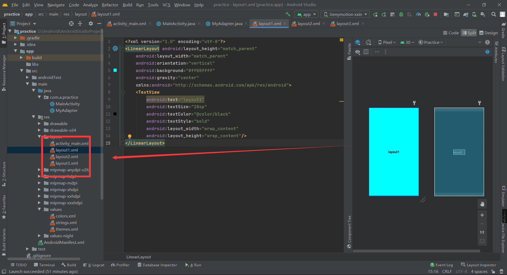

1
2
3
4
5
6
7
8
9
10
11
12
| <?xml version="1.0" encoding="utf-8"?>
<LinearLayout android:layout_height="match_parent"
android:layout_width="match_parent"
android:orientation="vertical"
android:id="@+id/linear"
xmlns:android="http://schemas.android.com/apk/res/android">
<androidx.viewpager.widget.ViewPager
android:id="@+id/viewPager"
android:layout_width="match_parent"
android:layout_height="match_parent"/>
</LinearLayout>
|

1
2
3
4
5
6
7
8
9
10
11
12
13
14
15
| <?xml version="1.0" encoding="utf-8"?>
<LinearLayout android:layout_height="match_parent"
android:layout_width="match_parent"
android:orientation="vertical"
android:background="#ff00ffff"
android:gravity="center"
xmlns:android="http://schemas.android.com/apk/res/android">
<TextView
android:text="layout1"
android:textSize="28sp"
android:textColor="@color/black"
android:textStyle="bold"
android:layout_width="wrap_content"
android:layout_height="wrap_content"/>
</LinearLayout>
|
创建适配器
ViewPager和RecyclerView、ListView一样需要适配器Adapter，它的适配器继承自PagerAdapter
1
2
3
4
5
6
7
8
9
10
11
12
13
14
15
16
17
18
19
20
21
22
23
24
25
26
27
28
29
30
31
32
33
34
35
36
37
38
39
40
41
42
43
| import android.view.View;
import android.view.ViewGroup;
import androidx.annotation.NonNull;
import androidx.viewpager.widget.PagerAdapter;
import java.util.List;
public class MyAdapter extends PagerAdapter {
private List<View> viewList;
public MyAdapter(List<View> viewList){
this.viewList = viewList;
}
@NonNull
@Override
public Object instantiateItem(@NonNull ViewGroup container, int position) {
container.addView(viewList.get(position),0);
return viewList.get(position);
}
@Override
public int getCount() {
return viewList.size();
}
@Override
public boolean isViewFromObject(@NonNull View view, @NonNull Object object) {
return view == object;
}
@Override
public void destroyItem(@NonNull ViewGroup container, int position, @NonNull Object object) {
container.removeView(viewList.get(position));
}
}
|
调用适配器
1
2
3
4
5
6
7
8
9
10
11
12
13
14
15
16
17
18
19
20
21
22
23
24
25
26
27
28
29
30
31
32
| import androidx.appcompat.app.AppCompatActivity;
import androidx.viewpager.widget.ViewPager;
import android.os.Bundle;
import android.view.View;
import java.util.ArrayList;
import java.util.List;
public class MainActivity extends AppCompatActivity {
private ViewPager viewPager;
private List<View> viewList;
@Override
protected void onCreate(Bundle savedInstanceState) {
super.onCreate(savedInstanceState);
setContentView(R.layout.activity_main);
viewList = new ArrayList<>();
View view1 = View.inflate(this,R.layout.layout1,null);
View view2 = View.inflate(this,R.layout.layout2,null);
View view3 = View.inflate(this,R.layout.layout3,null);
viewList.add(view1);
viewList.add(view2);
viewList.add(view3);
viewPager = findViewById(R.id.viewPager);
MyAdapter myAdapter = new MyAdapter(viewList);
viewPager.setAdapter(myAdapter);
}
}
|